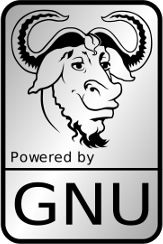
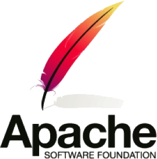
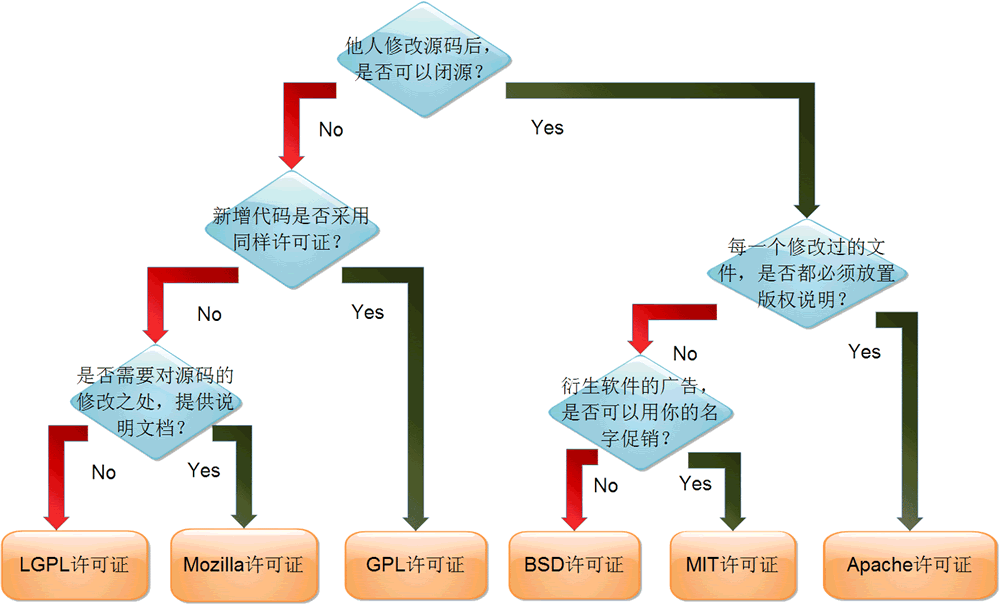

开源协议是什么？有哪些？如何选择？
开源软件在追求“自由”的同时，不能牺牲程序员的利益，否则将会影响程序员的创造激情，因此世界上现在有 60 多种被开源促进组织（Open Source Initiative）认可的开源许可协议来保证开源工作者的权益。
开源协议规定了你在使用开源软件时的权利和责任，也就是规定了你可以做什么，不可以做什么。
开源协议虽然不一定具备法律效力，但是当涉及软件版权纠纷时，开源协议也是非常重要的证据之一。
对于准备编写一款开源软件的开发人员，也非常建议先了解一下当前最热门的开源许可协议，选择一个合适的开源许可协议来最大限度保护自己的软件权益。
只要软件中包含了遵循 GPL 协议的产品或代码，该软件就必须也遵循 GPL 许可协议，也就是必须开源免费，不能闭源收费，因此这个协议并不适合商用软件。
遵循 GPL 协议的开源软件数量极其庞大，包括 Linux 系统在内的大多数的开源软件都是基于这个协议的。
BSD 协议基本上允许用户“为所欲为”，用户可以使用、修改和重新发布遵循该许可的软件，并且可以将软件作为商业软件发布和销售，前提是需要满足下面三个条件：
BSD 对商业比较友好，很多公司在选用开源产品的时候都首选 BSD 协议，因为可以完全控制这些第三方的代码，甚至在必要的时候可以修改或者二次开发。
Apache 和 BSD 类似，都适用于商业软件。Apache 协议在为开发人员提供版权及专利许可的同时，允许用户拥有修改代码及再发布的自由。
现在热门的 Hadoop、Apache HTTP Server、MongoDB 等项目都是基于该许可协议研发的，程序开发人员在开发遵循该协议的软件时，要严格遵守下面的四个条件：
使用 MIT 协议的软件有 PuTTY、X Window System、Ruby on Rails、Lua 5.0 onwards、Mono 等。
LGPL 允许商业软件通过类库引用（link）的方式使用 LGPL 类库，而不需要开源商业软件的代码。这使得采用 LGPL 协议的开源代码可以被商业软件作为类库引用并发布和销售。
但是如果修改 LGPL 协议的代码或者衍生品，则所有修改的代码，涉及修改部分的额外代码和衍生的代码都必须采用 LGPL 协议。因此LGPL协议的开源代码很适合作为第三方类库被商业软件引用，但不适合希望以 LGPL 协议代码为基础，通过修改和衍生的方式做二次开发的商业软件采用。
乌克兰程序员 Paul Bagwell 画了一张分析图，说明应该怎么选择开源协议，大家看了一目了然，真是清爽。
开源协议规定了你在使用开源软件时的权利和责任，也就是规定了你可以做什么，不可以做什么。
开源协议虽然不一定具备法律效力，但是当涉及软件版权纠纷时，开源协议也是非常重要的证据之一。
对于准备编写一款开源软件的开发人员，也非常建议先了解一下当前最热门的开源许可协议，选择一个合适的开源许可协议来最大限度保护自己的软件权益。
1) GNU GPL（GNU General Public License，GNU通用公共许可证）

只要软件中包含了遵循 GPL 协议的产品或代码，该软件就必须也遵循 GPL 许可协议，也就是必须开源免费，不能闭源收费，因此这个协议并不适合商用软件。
遵循 GPL 协议的开源软件数量极其庞大，包括 Linux 系统在内的大多数的开源软件都是基于这个协议的。
| 特点 | 说明 |
|---|---|
| 复制自由 | 允许把软件复制到任何人的电脑中，并且不限制复制的数量。 |
| 传播自由 | 允许软件以各种形式进行传播。 |
| 收费传播 | 允许在各种媒介上出售该软件，但必须提前让买家知道这个软件是可以免费获得的；因此，一般来讲，开源软件都是通过为用户提供有偿服务的形式来盈利的。 |
| 修改自由 | 允许开发人员增加或删除软件的功能，但软件修改后必须依然基于GPL许可协议授权。 |
2) BSD（Berkeley Software Distribution，伯克利软件发布版）协议
BSD 协议基本上允许用户“为所欲为”，用户可以使用、修改和重新发布遵循该许可的软件，并且可以将软件作为商业软件发布和销售，前提是需要满足下面三个条件：
- 如果再发布的软件中包含源代码，则源代码必须继续遵循 BSD 许可协议。
- 如果再发布的软件中只有二进制程序，则需要在相关文档或版权文件中声明原始代码遵循了 BSD 协议。
- 不允许用原始软件的名字、作者名字或机构名称进行市场推广。
BSD 对商业比较友好，很多公司在选用开源产品的时候都首选 BSD 协议，因为可以完全控制这些第三方的代码，甚至在必要的时候可以修改或者二次开发。
3) Apache 许可证版本（Apache License Version）协议

Apache 和 BSD 类似，都适用于商业软件。Apache 协议在为开发人员提供版权及专利许可的同时，允许用户拥有修改代码及再发布的自由。
现在热门的 Hadoop、Apache HTTP Server、MongoDB 等项目都是基于该许可协议研发的，程序开发人员在开发遵循该协议的软件时，要严格遵守下面的四个条件：
- 该软件及其衍生品必须继续使用 Apache 许可协议。
- 如果修改了程序源代码，需要在文档中进行声明。
- 若软件是基于他人的源代码编写而成的，则需要保留原始代码的协议、商标、专利声明及其他原作者声明的内容信息。
- 如果再发布的软件中有声明文件，则需在此文件中标注 Apache 许可协议及其他许可协议。
4) MIT（Massachusetts Institute of Technology）协议
目前限制最少的开源许可协议之一（比 BSD 和 Apache 的限制都少），只要程序的开发者在修改后的源代码中保留原作者的许可信息即可，因此普遍被商业软件所使用。使用 MIT 协议的软件有 PuTTY、X Window System、Ruby on Rails、Lua 5.0 onwards、Mono 等。
5) GUN LGPL（GNU Lesser General Public License，GNU 宽通用公共许可证）
LGPL 是 GPL 的一个衍生版本，也被称为 GPL V2，该协议主要是为类库设计的开源协议。LGPL 允许商业软件通过类库引用（link）的方式使用 LGPL 类库，而不需要开源商业软件的代码。这使得采用 LGPL 协议的开源代码可以被商业软件作为类库引用并发布和销售。
但是如果修改 LGPL 协议的代码或者衍生品，则所有修改的代码，涉及修改部分的额外代码和衍生的代码都必须采用 LGPL 协议。因此LGPL协议的开源代码很适合作为第三方类库被商业软件引用，但不适合希望以 LGPL 协议代码为基础，通过修改和衍生的方式做二次开发的商业软件采用。
如何选择开源协议
世界上的开源协议有上百种（有兴趣的读者请猛击这里了解），很少有人能彻底搞清它们之间的区别，即使在最流行的六种开源协议——GPL、BSD、MIT、Mozilla、Apache 和 LGPL——之中做选择，也很复杂。乌克兰程序员 Paul Bagwell 画了一张分析图，说明应该怎么选择开源协议，大家看了一目了然，真是清爽。
图片来自于阮一峰博客：如何选择开源协议

关注公众号「站长严长生」，在手机上阅读所有教程，随时随地都能学习。内含一款搜索神器，免费下载全网书籍和视频。

微信扫码关注公众号